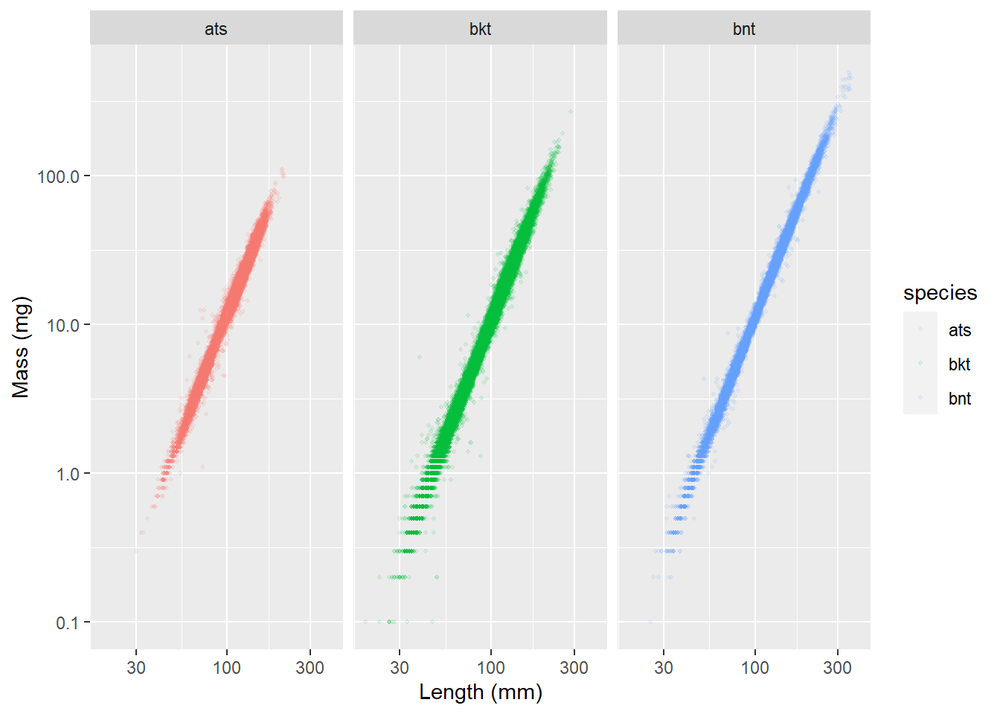

4 Get electrofishing data
Data are generated in R/getDataElectro-targets.R file
4.1 Get electrofishing data target
Code
cdWB_electro <- tar_read(cdWB_electro_target)
str(cdWB_electro)tibble [91,103 × 45] (S3: tbl_df/tbl/data.frame)
$ tag : chr [1:91103] "00088cbed0" "00088cbed3" "00088cbed4" "00088cbed4" ...
$ detectionDate : POSIXct[1:91103], format: "2013-03-25 04:00:00" "2012-06-07 13:03:00" ...
$ sampleName : chr [1:91103] "84" "81" "84" "85" ...
$ sampleNumber : num [1:91103] 73 70 73 74 70 71 73 79 80 71 ...
$ river : chr [1:91103] "wb obear" "west brook" "west brook" "west brook" ...
$ section : num [1:91103] 7 1 40 44 25 32 32 3 3 23 ...
$ area : chr [1:91103] "trib" "inside" "inside" "inside" ...
$ observedLength : num [1:91103] 62 62 109 154 113 120 147 70 74 86 ...
$ survey : chr [1:91103] "shock" "shock" "shock" "shock" ...
$ pass : num [1:91103] 1 1 1 1 1 1 1 1 1 1 ...
$ observedWeight : num [1:91103] 1.9 2.7 12.6 41.3 15.5 18.3 30.4 3.5 4.8 6.7 ...
$ comments : chr [1:91103] "additional genetic sample" NA NA NA ...
$ cohort : num [1:91103] 2012 2012 2012 2012 2011 ...
$ species : chr [1:91103] "bkt" "bkt" "bkt" "bkt" ...
$ dateEmigrated : Date[1:91103], format: NA NA ...
$ sex : chr [1:91103] NA NA NA NA ...
$ year : int [1:91103] 2013 2012 2013 2013 2012 2012 2013 2014 2014 2012 ...
$ season : num [1:91103] 1 2 1 2 2 3 1 3 4 3 ...
$ proportionSampled : num [1:91103] 1 1 1 1 1 1 1 1 1 1 ...
$ lagDetectionDate : POSIXct[1:91103], format: NA NA ...
$ meanTemperature : num [1:91103] NaN NaN 10.7 NaN 16.5 ...
$ meanFlow : num [1:91103] NaN NaN 0.5247 NaN 0.0338 ...
$ riverOrdered : Ord.factor w/ 4 levels "west brook"<"wb jimmy"<..: 4 1 1 1 1 1 1 4 4 1 ...
$ sectionOriginal : chr [1:91103] "7" "1" "40" "44" ...
$ inside : logi [1:91103] TRUE TRUE TRUE TRUE TRUE TRUE ...
$ yday : int [1:91103] 84 159 88 176 160 271 87 260 335 270 ...
$ ageInSamples : num [1:91103] 3 0 3 4 4 5 7 1 2 1 ...
$ isYOY : logi [1:91103] TRUE TRUE TRUE FALSE FALSE FALSE ...
$ lagSection : num [1:91103] NA NA 44 NA 32 32 NA 3 NA 24 ...
$ distMoved : num [1:91103] NA NA -4 NA -7 0 NA 0 NA -1 ...
$ lagObservedWeight : num [1:91103] NA NA 41.3 NA 18.3 30.4 NA 4.8 NA 12.7 ...
$ lagObservedLength : num [1:91103] NA NA 154 NA 120 147 NA 74 NA 108 ...
$ grWeight : num [1:91103] NA NA 3.30e+10 NA 1.48e-01 ...
$ grLength : num [1:91103] NA NA 0.5102 NA 0.0631 ...
$ minSample : num [1:91103] 73 70 73 73 70 70 70 79 79 71 ...
$ maxSample : num [1:91103] 73 70 74 74 73 73 73 80 80 74 ...
$ minYear : num [1:91103] 1997 1997 1997 1997 1997 ...
$ moveDir : num [1:91103] NA NA -1 NA -1 0 NA 0 NA -1 ...
$ sampleInterval : num [1:91103] NA NA 88.2 NA 110.9 ...
$ drainage : chr [1:91103] "west" "west" "west" "west" ...
$ quarter_length : num [1:91103] 5 5.2 5.03 4.83 4.75 ...
$ river_meter : num [1:91103] 5252 4394 5208 5292 4903 ...
$ confluence_river_meter: num [1:91103] 5114 0 0 0 0 ...
$ riverMeter : num [1:91103] 5252 4394 5208 5292 4903 ...
$ nPasses : num [1:91103] 1 2 1 2 2 2 1 1 1 2 ...4.2 Length-weight graph
Code
ggplot(cdWB_electro, aes(observedLength, observedWeight, color = species)) +
geom_point(size = 0.75, alpha = 0.1) +
scale_x_log10("Length (mm)") +
scale_y_log10("Mass (mg)") +
# theme_publication() +
facet_wrap(~ species)
4.3 Length-weight regression
Code
lwReg <- cdWB_electro %>%
nest_by(species) %>%
mutate(reg = list(lm(log(observedWeight) ~ log(observedLength), data = data)))
lwReg %>% summarise(broom::tidy(reg)) # A tibble: 6 × 6
# Groups: species [3]
species term estimate std.error statistic p.value
<chr> <chr> <dbl> <dbl> <dbl> <dbl>
1 ats (Intercept) -11.4 0.00942 -1210. 0
2 ats log(observedLength) 3.00 0.00208 1442. 0
3 bkt (Intercept) -11.5 0.00621 -1859. 0
4 bkt log(observedLength) 3.02 0.00140 2155. 0
5 bnt (Intercept) -11.5 0.00686 -1670. 0
6 bnt log(observedLength) 3.01 0.00149 2023. 0Code
lwReg %>% summarise(broom::glance(reg))# A tibble: 3 × 13
# Groups: species [3]
species r.squared adj.r.…¹ sigma stati…² p.value df logLik AIC BIC
<chr> <dbl> <dbl> <dbl> <dbl> <dbl> <dbl> <dbl> <dbl> <dbl>
1 ats 0.989 0.989 0.0945 2.08e6 0 1 22663. -45319. -45295.
2 bkt 0.991 0.991 0.112 4.64e6 0 1 32555. -65105. -65079.
3 bnt 0.996 0.996 0.0858 4.09e6 0 1 18345. -36683. -36660.
# … with 3 more variables: deviance <dbl>, df.residual <int>, nobs <int>, and
# abbreviated variable names ¹adj.r.squared, ²statistic
# ℹ Use `colnames()` to see all variable names